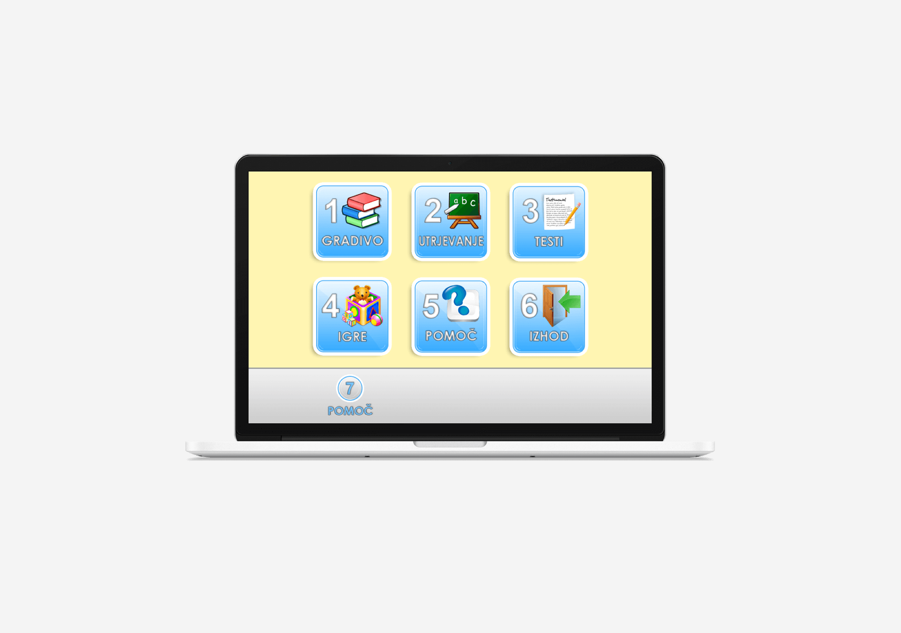
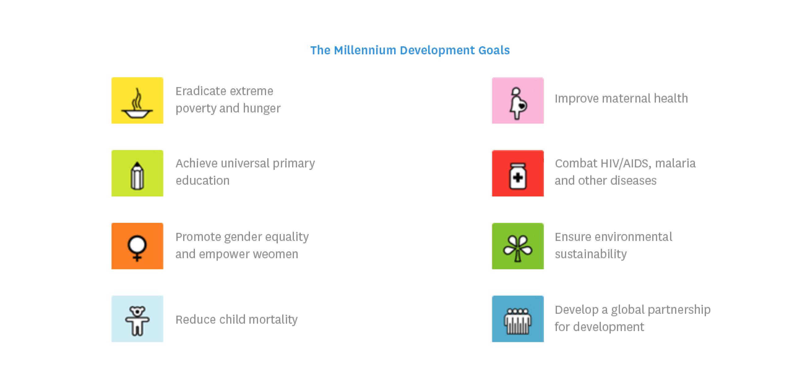
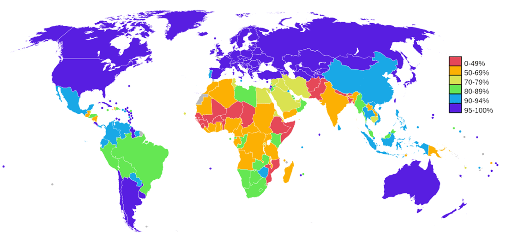
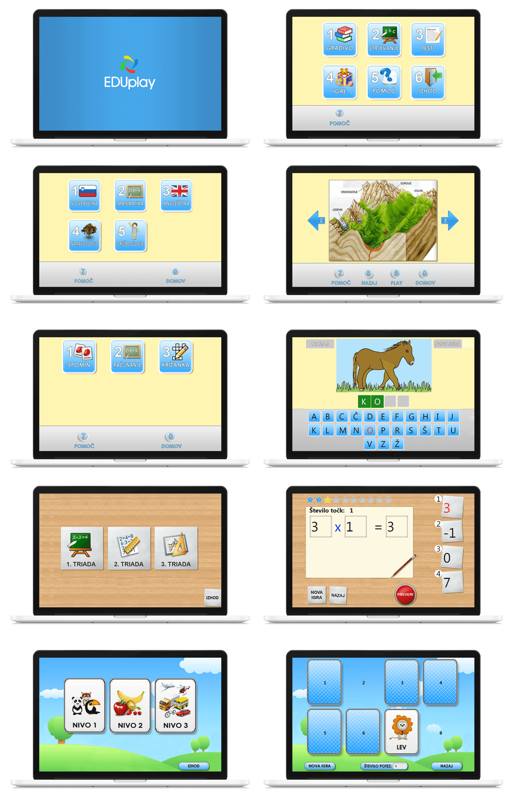
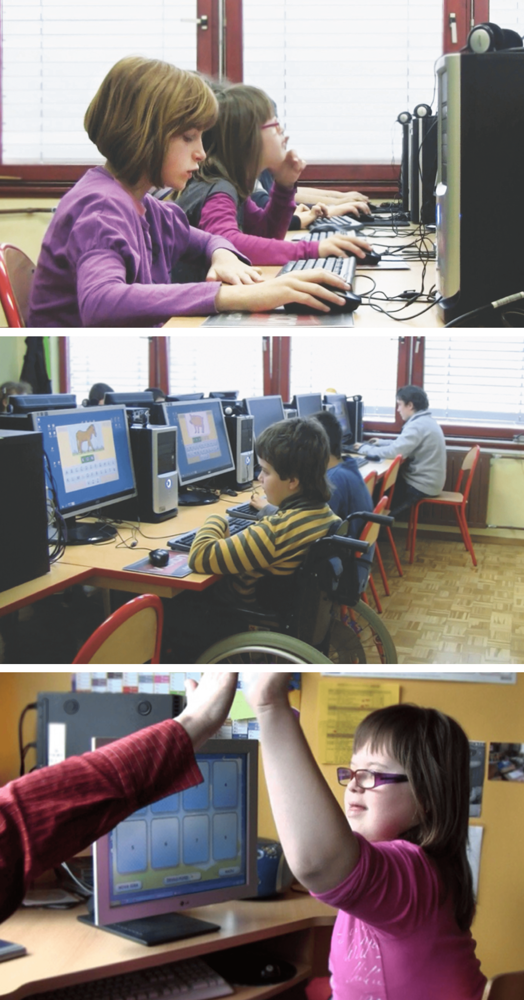

Eduplay
App for children with special needs

Overview
Eduplay is a project I was part of in 2011 with 5 university friends as part of the Microsoft Imagine Cup Competition. We won the Second award at the National Competition.
Our idea was to build a computer software that enables children to learn independently and play educational games. The program has been designed and adapted for children with special needs, such as blindness, deafness, physical disabilities, behavioral and personality disorders, etc.
The problem
The goal of the competition was how to solve the world biggest problems with technology. United Nations identified 8 biggest problems in the "Millennium Development Goals". Our application falls into the objective, how to ensure primary education for all children.
Education is the key to creativity, use and spread of new ideas and technologies that are essential for sustainable growth, as it increases the cognitive and other skills that increase labor productivity. The problem is not only that children are not part of the primary education, but the problem is also that education is generally not qualitative enough.
Every child in the world has the right to receive any education, including children, who need to obtaining particular fight. These are children with special needs. They need much more help, encouragement and effort to reach desired goals.

Research
To understand the problem we were solving for we connected with a local elementary school for children with special needs, where we interviewed the teachers and learned more about their learning process and problems they are facing, when teaching children with special needs. The biggest challenge is to provide the same support for all the children. A teacher has around 14 children in his class, and each of them has their own special needs. Some of them need more guiding and leading through the learning process, others need different tooling to be able to keep up with other classmates. It us difficult to ensure that all of the children are on the same level.
The second research was based on the data we collected from online surveys. Unfortunately there is no specific statistics, how many children with special need are in the world, but we assumed that the reason behind this is that depending of the children's special needs, a lot of them are still attending "normal" elementary schools.
We wanted to create a software application for children, so that they can learn and play educational games. The same software could also be applied to any child willing to learn. For that reason we expended our research on actual education and found out that 1 out of 5 people in the developing countries (862 million) can not read or write. Around 115 million children around the world do not attend in elementary school, 226 millions do not attend high school. Around 75% of uneducated children are female. 60% of children that attend an elementary school still does not know how to read or write, due to an insufficient amount of teachers, books and schools.

Solution
Our application was based on providing quality education for every child. The application is a software program that works as an interactive textbook and workbook. At the same way the application is adapted for children with special needs. Therefore it supports voice command and speech recognition. Inside the learning activities, children can operate the application through pronunciation of numbers, computer mouse, a keyboard or even a touch screen.
User modeling
In order to effectively create a meaningful and useful solution we first need to understand and design what the end-user needs.The personas help us keep focus on the people who will actually use the product. Our persona decisions were created on the collaboration with the local school for children with special needs. We have 3 main group of user we are targeting:
Children
- Children with no disabilities
- Children with autism
- Children with blindness or deafness
- Children with physical disabilities
- Children with Down Syndrome
Each of the children are representing the end user in a unique way. Based on that data we needed to adjust the application and the user experience.
Teachers
Users who are uploading the learning material, tests and look into the statistics on how each of the children is improving. With help of the statistics behind the software teachers can monitor the progress or regression of the child, so that they know what problems the child is facing and help them solve it.
Parents
Parents also have insights into the statistics and improvements of their child to see their results and improvements.
User flows and tasks
User flows and tasks are lists of all possible actions that needs to be thoroughly considered, as well as the system behavior in each scenario. It gives us the overview of the activities user is able to perform. The user flows and the task that the children would complete were based on the schools curricula ad their resources.
Together with the school board we decided to focus on 4 main functions: learning materials, consolidation of knowledge, exams and educational games. Children can first learn a specific substance, consolidate and later check and test the knowledge in an entertaining game.
4 main functions
- Learning materials
- Consolidation of knowledge
- Exams
- Educational games
Children task flow
- Learn specific substance
- Consolidate
- Check and test
- Re-test through playing games
Learning task flow:
- Login
- Sunbstance
- English
- Learn
Design Challenges
Before we could continue with the process, we needed to collaborate with the school board to lay down basic requirements that are needed for creating a great user experience. Creating an application for children and children with special needs doesn't mean to use standard design approaches but requires specific requirements.
Colors
Colors have a very psychological influence on the users. The age is powerful factor of our reactions to certain colors. Proof of this is the fact that our color preferences change over time and through different periods of our life.
Colors have the biggest amount of influence on children with special needs. Effect of colors is very different from the forms of diseases and disorders and they can different from the individuals. For example: children with autism can strongly react to strong colors, even brushes or pencils. Colors, that are very loud can overall influence children attention and motivation.
Color adjustments
- Using yellow background that relaxes children
- Using less white color, which can influence children concentration, due to its brightness
Shapes and forms
Detection of forms depends on the form of the disease and needs of children. For example, children with dyslexia have a significant low processing and perceptions, what means that the child will need more time for perception of shapes.
Specific adjustments:
- Minimum complexity of content
- Simple and optimal use
- Simple vocabulary
- Information presented as most correct form, specially images
- Highlighted parts of letters, fonts
- Administration of rewards and failed attempts
- Simple overview of the options
- Large button sizes and fonts
- Calm and no distracting colors
- Audio and video content
Final product

The Results
Before we started creating the application, we closely consulted with teachers and pedagogues, to understand our end users to provide a great user experience, which is simple and optimal for children and children with special needs.
With the test project we wanted to measure the effectiveness, efficiency and emotion. Through effectiveness we wanted to see if our users have completed and achieved specific goals. With efficiency we measured the amount of effort the user need to put in to achieve their goals. And with a great joy, we measured how the users, in our case children and teachers, felt about the end product.
In September 2010 we agreed to test the project in the elementary school for children with special need. With our test observation we were able to watch and listen carefully to the users as they work with our prototype. Although it was possible to collect far more elaborate data, observing our users was a quick way to obtain an objective thoughts about our product. Our participants worked through some specific tasks that were video recorded, what helped us to analyze and document the results and support our design decisions.
Our test results that we gathered from the usability testing were better than we expected. We had a very high user satisfaction, children were very enthusiastic and interested in trying out the application. They were very happy playing games that were educational for them.
The result of effectiveness was really good, but we still found a lot of room for improvements. Overall children didn't had any problems completing or achieving specific goals. The efficiency was the biggest success. The effort that children needed to put in was normal. I don't want to use the word low, because it needs some effort for children to do some mathematical tests, but overall we came to conclusion that our efficiency was possible through providing an user experience that really meets the children needs and since the data was provided by the school, children already knew everything about it, we just made it more useful and interesting for them.

School Response
Since the project was a volunteer experience as part of the Imagine Cup competition we were very very pleased and thankful to the local elementary school that guided us through this process and provided us with any material we needed. Because we were all still attending university this was more like a side project showed a lot of potential and interests.
For saying thank you to the elementary school we installed the software on all of their computers and gave them access to use this software in their learning process and uploaded all the data knowing that we provided a better education for children and children with special needs.
“We are very grateful that we could contribute to this project. with our program. with our practices that we have at the school. but Eduplay helped us. how all this knowledge, all of these experiences and our test, to put together in such a shape. a shape that can be accessible to general crowd of children and we are pleased that we have also completed the successful cooperation that has created one such program, which will prove useful in this school year as an upgrade to the teaching process or as a motivational tool “.Headmistress
“I user Eduplay at my work, I use it by children who use alternative communication tools, in terms of literacy, but in particular, the program seems to me very appropriate to be used in early grades, because of the adaption, so that children can use the program regardless of his physical disabilities, but also because it allows us to use various switches, like customized keyboards, mice, and what is most important is that the children can learn through playing games. “.Speech Therapist